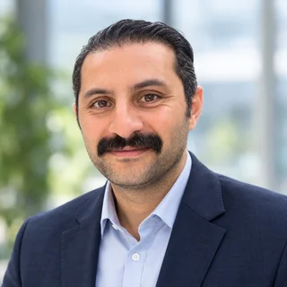
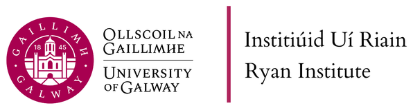

The breeder decides
AgriFuTech recommends; people decide. Changes to a recommendation are recorded with a reason, and nothing is advanced without the breeder's decision and, where required, a second person's approval.
University of Galway · Supported by the Research Ireland ARC Hub for ICT
AgriFuTech is a decision-support platform for plant breeding programmes. It helps breeders decide which lines to advance and how to allocate field trials. Every recommendation is explained, every human decision is kept, and any past decision can be reconstructed exactly as it was taken.
Ranked by the breeder's own trait priorities; percentages show how likely each line is to truly belong in the top group. Illustration with synthetic values.
The platform
The full AgriFuTech platform connects a breeding programme's data to its yearly selection decisions and learns from what happens in the field. Select a stage to see what it does.
Role-based access per breeding project, approval by a second person, a tamper-evident audit history, versioned and fingerprinted methods, verified backups, and the ability to see exactly what was known when a decision was taken. Working today
Why it matters
AgriFuTech recommends; people decide. Changes to a recommendation are recorded with a reason, and nothing is advanced without the breeder's decision and, where required, a second person's approval.
Early-generation trial data is noisy. The platform shows how certain each selection is, flags lines that may be wrongly included or left out, and never presents a guess as genetic gain.
Inputs are frozen at decision time and every method version is fixed and fingerprinted, so any past recommendation can be re-run and checked years later.
Progress
AgriFuTech is developed in increments. The first increment, the Decision Core, works end to end and has been tested on synthetic and public historical breeding data. It has not yet been used with a partner's own data.
News & events
Team

Data pipelines, decision engine, integrations
Recruitment in progress
Breeder-facing interface, visualisation
Recruitment in progress
Applications for both Research Assistant posts are closed; interviews are under way.
Home and partners

We welcome breeding programmes and research groups interested in pilot seasons, retrospective studies on historical data, or method review.
Contact
We are looking for breeding programmes and data partners for pilot seasons and retrospective studies, and we are happy to present the platform to your team.